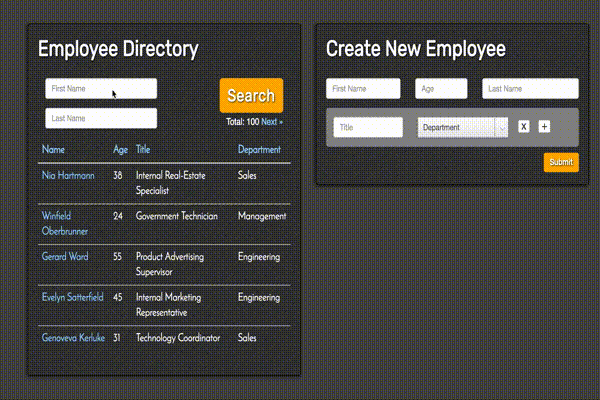

Tutorial
Walking Through Customization and Real-World Scenarios
In this section, we’ll build an employee directory application. If you’re looking for a brief overview, head to the Quickstart instead.

If you get lost, you can view the code on Github:
Note: each of these repos has a separate branch for step one, step two, etc. View the latest branch for final code, or follow along step-by-step
The intent is to illustrate a variety of real-world use cases:
- Turning 3 database tables into one cohesive search grid.
- Customizing SQL queries.
- Ability to filter, sort, and paginate data.
- Total count
- Custom Serialization
- Nested CRUD of relationships, including validation errors.
Note: to better understand the underlying code, we’ll be avoiding use of generators. Head to the Quickstart for a guide on how to automate much of the legwork here.
Reads
Setup
We’ll be creating an API for an Employee Directory. An Employee has many Positions (one of which is the current position), and a Position belongs to a Department.
Let’s start with a basic foundation: an index endpoint (list multiple entities) and a show (single entity) endpoint for an Employee model.
Code:
# app/controllers/employees_controller.rb
class EmployeesController < ApplicationController
jsonapi resource: EmployeeResource
def index
render_jsonapi(Employee.all)
end
def show
scope = jsonapi_scope(Employee.where(id: params[:id]))
render_jsonapi(scope.resolve.first, scope: false)
end
end# app/resources/employee_resource.rb
class EmployeeResource < ApplicationResource
type :employees
end# app/serializers/serializable_employee.rb
class SerializableEmployee < JSONAPI::Serializable::Resource
type :employees
attribute :first_name
attribute :last_name
attribute :age
endTests:
# spec/api/v1/employees/index_spec.rb
RSpec.describe 'v1/employees#index', type: :request do
let!(:employee1) { create(:employee) }
let!(:employee2) { create(:employee) }
it 'lists employees' do
get '/api/v1/employees'
expect(json_ids(true)).to eq([employee1.id, employee2.id])
assert_payload(:employee, employee1, json_items[0])
end
end# spec/api/v1/employees/show_spec.rb
RSpec.describe 'v1/employees#show', type: :request do
let!(:employee) { create(:employee) }
it 'returns relevant employee' do
get "/api/v1/employees/#{employee.id}"
assert_payload(:employee, employee, json_item)
end
endA note on testing: these are full-stack request specs. We seed the database using factory_girl, randomizing data with faker, then assert on the resulting JSON using spec helpers.
You won’t have to write all the tests you see here, some are simply for demonstrating the functionality.
Filtering
One line of code allows simple WHERE clauses. If the user tried to filter on something not whitelisted here, an error would be raised.

Custom Filtering
Sometimes WHERE clauses are more complex, such as prefix queries. Here we’ll query all employees whose age is greater than or equal to a given number.
Sorting
Sorting comes for free, but here’s a test for it. Decide as a team if we actually need to write a spec here, or if it’s considered tested within the libraries.
Custom Sorting
Sometimes we need more than a simple ORDER BY clause, for example maybe we need to join on another table. In this example, we switch from Postgres’s default case-sensitive query to a case in-sensitive one…but only for the first_name field.
Pagination
Pagination also comes for free, so once again we’ll have to decide if writing a spec like this is worth the bother.
Custom Pagination
By default we use the Kaminari library for pagination. This shows how we could instead sub-out Kaminari and replace it with will_paginate
Statistics
For default statistics, (count, sum, average, maximum and minimum), simply specify the field and statistic.
Custom Statistics
Here we add a median statistic to show non-standard custom statistic usage.
Custom Serialization
Let’s say we wanted the employee’s age to serialize Thirty-Two instead of 32 in JSON. Here we use a library to get the friendly-word doppleganger, and change the test to recognize this custom logic.
Has-Many Association
Get employees and their positions in one call.
Belongs-To Association
Get employees, positions, and the department for those positions in one call:
Many-to-Many
In this example an Employee has many Teams and a Team has many Employees.
Resource Re-Use
In prior steps we created PositionResource and DepartmentResource. These objects may have custom sort logic, filter whitelists, etc - this configuration can be re-used if we need to add /api/v1/positions and /api/v1/departments endpoints.
Filter/Sort/Paginate Associations
This comes for free. As long as the associated Resource knows how to do something, we can re-use that logic.
Error Handling
In this example we add global error handling, so any random error will return a JSONAPI-compatible error response. Then we customize that response for a specific scenario (the requested employee does not exist).
Writes
Basic Create
Basic example without validations or strong parameters.
Validations
Validations are basic, vanilla Rails code. When there is a validation error, we return a jsonapi-compatible error respone.
Strong Resources
The biggest problem with strong_parameters is that we might want to create an employee from the /employees endpoint, or we might want to create a position with an employee at the same time from /positions. Maintaining the same strong parameter hash across a number of places is difficult.
Instead we use strong_resources to define the parameter template once, and re-use. This has the added benefit of being built on top of stronger_parameters, which gives us type checking and coercion.
Note: strong_resources requires Rails.
Basic Update
Looks very similar to create.
Basic Destroy
More or less basic Rails.
Customizing Persistence
So far we’ve shown ActiveRecord. What if we wanted to use a different ORM, or ElasticSearch? What if we wanted ‘side effects’ such as “send a confirmation email after creating the user”?
This code shows how to customize create/update/destroy. In this example we’re simply logging the action, but you could do whatever you want here as long as you return an instance of the object. Just like with reads, if any of this code becomes duplicative across Resource objects you could move it into a common Adapter.
Association Writes
Nested Creates
Think Rails’ accepts_nested_attributes_for, but not coupled to Rails or ActiveRecord. Here we create an Employee, a Position for the employee, and a Department for the position in one call. This is helpful when dealing with nested forms!
Once again, note how our strong_resources can be shared across controllers.
Nested Updates
We got this for free, here’s a spec!
Nested Destroys
We get this for free, though we have to explicitly tell strong_resources that destroys are allowed from this endpoint.
Note destroy will do two things: delete the object, and make the foreign key on the corresponding child in the payload null.
Disassociations
destroy actually deletes objects, what if we want to simply disassociate the objects by making the foreign key null? We get this for free, too.
Usage without ActiveRecord
Let’s say the departments come from a service call. Here’s the change to
the /departments endpoint.
Make the model a PORO:
# app/models/position.rb
# belongs_to :department, optional: true
attr_accessor :departmentUse {} as our base scope instead of ActiveRecord::Relation:
# app/controllers/departments_controller.rb
def index
# render_jsonapi(Department.all)
render_jsonapi({})
endCustomize resolve for the new hash-based scope:
# app/resources/department_resource.rb
use_adapter JsonapiCompliable::Adapters::Null
def resolve(scope)
Department.where(scope)
endDepartment.where is our contract for resolving the scope. The underlying Department code could use an HTTP client, alternate datastore, what-have-you.
Let’s also change our code for sideloading departments at /api/v1/employees?include=departments:
# app/resources/position_resource.rb
# belongs_to :department,
# scope: -> { Department.all },
# foreign_key: :department_id,
# resource: DepartmentResource
allow_sideload :department, resource: DepartmentResource do
scope do |employees|
Department.where(employee_id: employees.map(&:id))
end
assign do |employees, departments|
employees.each do |e|
e.department = departments.find { |d| d.employee_id == e.id }
end
end
endAs you can see, we’re delving into a lower-level DSL to customize. You
probably want to package up these changes into an Adapter. The ActiveRecord adapter is simple packaging up similar low-level defaults. Your app may require an HTTPAdapter or ServiceAdapter, or you can make one-off customizations as shown above.
ElasticSearch
Similar to a service call, here’s how we might incorporate the elasticsearch trample gem.
Make our base scope an instance of our Trample client:
# app/controllers/employees_controller.rb
def index
# render_jsonapi(Employee.all)
render_jsonapi(Search::Employee.new)
end
endCustomize the resource using the Trample Client API:
# app/resources/employee_resource.rb
use_adapter JsonapiCompliable::Adapters::Null
allow_filter :first_name do |scope, value|
scope.condition(:first_name).eq(value)
end
allow_filter :first_name_prefix do |scope, value|
scope.condition(:first_name).starts_with(value)
end
def resolve(scope)
scope.query!
scope.results
endOnce again, you probably want to package these changes into an Adapter.
Client-Side
JSORM
There are number of jsonapi clients in a variety of languages. Here we’ll be using JSORM - an ActiveRecord-style ORM that can be used from Node or the browser. It’s been custom-built to work with JSONAPI Suite enhancements.
This will fetch an employee with id 123, their last 3 positions where the title starts with ‘dev’, and the departments for those positions.
We’ll use typescript for this example, though we could use vanilla JS just as well. First define our models (additional client-side business logic can go in these classes):
import { JSORMBase, Model, Attr, HasMany, BelongsTo } from "jsorm"
@Model()
class ApplicationRecord extends JSORMBase {
static baseUrl = "http://localhost:3000"
static apiNamespace = "/api/v1"
}
@Model()
class Employee extends ApplicationRecord {
static jsonapiType = "people"
@Attr() firstName: string
@Attr() lastName: string
@Attr() age: number
@HasMany() positions: Position[]
}
@Model()
class Position extends ApplicationRecord {
static jsonapiType = "positions"
@Attr() title: string
@BelongsTo() department: Department[]
}
@Model()
class Department extends ApplicationRecord {
static jsonapiType = "departments"
@Attr() name: string
}Now fetch the data in one call:
let positionScope = Position
.where({ title_prefix: "dev" })
.order({ created_at: "desc" })
let scope = Employee
.includes({ positions: "department" })
.merge({ positions: positionScope })
let employee = (await scope.find(123)).data
// access data like so in HTML:
// employee.positions[0].department.name
}Read the JSORM documentation here
VueJS Sample Application
JSORM can be used with the client-side framework of your choice. To give an example of real-world usage, we’ve created a demo application using VueJS. Vue is lightweight and provides the bare-bones we need to illustrate JSONAPI and JSORM in action.
This will point to a slightly-tweaked branch of the server-side API above.
Let’s create our app.
Step 0: Setup
We’ve started with a basic Vue app configured with Webpack. None of this is JSONAPI-specific, just boilerplate to get started quickly.
Step 1: Models
We’ll start by defining our models, which should look very familiar if
you’ve worked with ActiveRecord. Again, see the JSORM
documentation if any of this looks confusing to you.
Step 2: Data Grid
We’ll add a simple data grid to our page listing all Employees. This
will turn into a search grid, but for now we’re simply loading employees
via Employee.all()
Step 3: Adding Relationships
Here we’ve added a currentPosition relationship to avoid fetching
excess data from the server. When the page loads we fetch the
employees, current positions for those employees, and the departments for those positions.
Step 4: Filtering
Here we’ve added a bit of state to the page, query, which will be
bound to the form inputs. We pass query to Employee.where to
successfully query employees by first and last name.
Step 5: Sorting
Just like with filters, we add a bit of state to our page to track sorting parameters. When the user clicks a table header, we’ll update that state and pass it to our query.
Step 6: Stats
A JSORM promise returns a response object with a data key - the
model instance(s) we’ve been referencing so far. It also returns a
meta key that reflects the meta section of the JSONAPI response.
Here we’ll request the total count of employees in our query to the
server, grab that total count from meta, and bind it to the page as
totalCount
Step 7: Pagination
Building on what we’ve already done, we can apply a similar pattern for
pagination. We add the currentPage state and alter it when the user
clicks pagination links. We use currentPage and totalCount to figure
out if we should display previous/next page links.
Step 8: Basic Form Setup
We’ll be adding a form to create and update employees. This step just adds the relevant HTML and Vue code to get set up, before involving JSORM.
Step 9: Dropdowns
Our form will submit employees, positions and departments in a single
request. We associate a position to an existing department through a
select dropdown. To populate that dropdown, we fetch all departments
from the server and bind it to the select.
Step 10: Nested Create/Update
This step simply binds our instantiated models to the form. When the form is submitted, we save everything in a single one-line request.
After the form submission, we could edit the form and submit again -
JSORM will know to PATCH an update to the appropriate URL
automatically.
Note we could also edit our search to immediately reflect the new data…but this is more Vue-specific than anything to do with JSORM, so we’ll hold off until the last step.
Step 11: Validations
Our server-side code will automatically handle validation errors and
give us a well-formatted response. JSORM will read that response and
automatically apply error objects to our model instances. Here we
display simple error messages without involving any JS code.
Step 12: Nested Destroy
This step adds buttons to our form that will add and remove positions
for a given employee. To add, we simply push a new Employee onto the
relationship array. To remove, we set isMarkedForDestruction = true,
which allows for “unsaved deleted records”. This follows a similar
pattern to one introduced in Ember Data, explained here.
Note that if we wanted to disassociate the position rather than
destroying the underlying record, we could use
position.isMarkedForDisassociation = true.
Step 13: VueJS Wrap-up
Our final step adds some Vue-specific functionality - we add an
EventBus to allow selecting an employee from the grid and binding it
to the form, and refresh the search grid after each form submission.